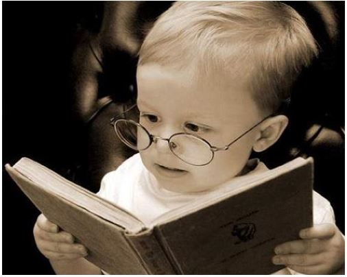
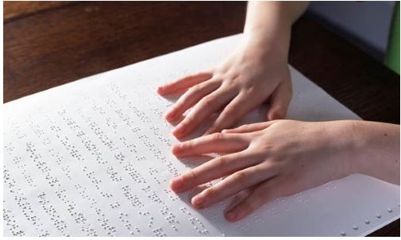

Textos interessantes sobre assuntos dos quais ninguém quer saber
Por Igor Buess - 05/07/2020
Um dos maiores símbolos de intelectualismo e conhecimento que a nossa cultura gosta de venerar são os livros, ou mais específicamente, o hábito de ler livros. Criou-se uma mística em volta destes objetos como se fossem a melhor e mais completa forma de obter conhecimento. Entretanto gostaria de fazer uma análise crítica e reflexão sobre este tema.
Livros, filmes, vídeos, rádio, áudios, artigos e outros são meramente meios de transmissão de informações. Cada um destes meios utilizam sua própria linguagem e um sentido do nosso corpo.
Livros e artigos utilizam a escrita como linguagem e a visão como sentido.
Filmes utilizam imagens, escrita e a fala como linguagem e a visão e audição como sentidos.
Rádios e áudios utilizam a fala como linguagem e a audição como sentido.
Ainda existem formas adaptadas de transmissão de informações como a linguagem braile (que usa o tato) e a linguagem dos sinais (que utiliza a visão e gestos com as mãos). Todos os meios citados são completos o suficiente para contar histórias e passar conhecimentos.
A única diferença que existe no uso de cada meio é que o hábito de utilizar uma linguagem torna a pessoa melhor nesta linguagem. Exemplo: uma pessoa que lê muito desenvolve melhor o conhecimento na linguagem escrita (no nosso caso o português). Evidentemente que dentro de uma mesma linguagem existem diferenças intrínsecas no estilo de transmissão de informação. Um livro costuma ser muito mais extenso que um artigo, por exemplo.
É importante dizer que a qualidade da informação não tem nada a ver com o meio de transmissão, ou seja, existem livros péssimos, filmes bons e vice versa.
Desta forma, creio que na era da tecnologia, onde temos uma abundância de meios de transmissão, ficar presos na glamourização de livros me parece uma mentalidade retrógrada. Além disso, podemos incorrer em atos discriminatórios, pois estaríamos dizendo que, por exemplo, não é possível um deficiente visual ser uma pessoa culta e com muitos conhecimentos por não poder ler livros escritos em linguagem tradicional.
Por fim, é importante considerar que a experiência de vida é um dos melhores meios de transmissão de informação e geração de conhecimento. Um agricultor que trabalhou a vida inteira no campo e não sabe ler ou escrever, muito possívelmente, vai saber mais de agricultura do que um pseudo culto que leu 50 livros do assunto, mas nunca teve a experiência prática.